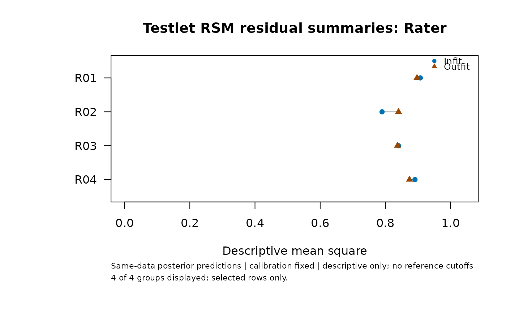

Describe posterior predictive residuals for ordinary and extended RSMs
Source:R/api-response-diagnostics.R
mfrm_response_diagnostics.RdIntegrate uncertain abilities and local or shared-rater effects before computing response means, variances and descriptive Infit/Outfit summaries.
Arguments
- fit
A numerically ready native RSM MML
fit_mfrm(),fit_mfrm_testlet()orfit_mfrm_random_rater()result.- rows
Distinct original input row numbers to return, or
NULLfor all assigned rows. This selects outputs only: every observed source rating still informs the joint posterior. Groups summarize the selected rows.- group_by
Fitted identifier columns to summarize separately.
NULLuses all Person, testlet/rater and fixed-facet columns. No grouping by score.- quad_points
Normal quadrature order, 7 to 121 for testlets or 7 to 241 for ordinary RSMs or shared raters. Defaults to the saved fit's order. Results are checked at
2 * quad_points + 1; each category probability must change by no more than1e-7.- object, x
A saved response-diagnostics result.
- ...
Unused.
Value
An mfrm_response_diagnostics object with rows, category
probabilities, grouped measures, settings and exact source metadata.
Save with saveRDS(); attach via
mfrm_results(fit, response_diagnostics = result, compute = "never").
Supply two saved outputs to compare_mfrm() for aligned ordinary versus
extended-model comparisons, using the same selected events and group_by.
Collecting, plotting and exporting saved results never recomputes integrals.
Details
Calibration is held fixed. For a replicate rating sharing the original row's latent effects, the target is $$p_{ik}=E[P(Y_i^{rep}=k\mid b,\widehat\psi)\mid Y_{obs},\widehat\psi],$$ where b includes ability, and for extensions the local effect or jointly uncertain shared-rater vector. This uses the same observed data for estimation and checking; it is not held-out prediction. Define $$\mu_i=\sum_k k p_{ik},\qquad V_i=\sum_k (k-\mu_i)^2p_{ik}.$$ The mixture variance includes both conditional rating variance and variance of conditional means. Substituting an ability/rater estimate or averaging conditional variances alone gives a different quantity.
For selected observed unit-weight rows in a group, descriptive Outfit is the mean of \((y_i-\mu_i)^2/V_i\); descriptive Infit is \(\sum_i(y_i-\mu_i)^2/\sum_i V_i\). These summaries have no established expectation of one. There are no default cutoffs, ZSTD, p-values, automatic flags or rater-quality classifications. Ordinary plug-in Infit/Outfit values do not have the same probability definition and must not be compared directly. No response covariance or calibration uncertainty is supplied, so these results do not calibrate a formal goodness-of-fit test.
Ordinary RSMs integrate normal ability by quadrature, retaining every
observed rating of the relevant Person. Supported ordinary fits have
unit weights, additive unanchored severity facets, no interactions or
shrinkage, Person as the noncentered facet, consecutive integer source
categories, and either known N(0,1) or population_formula = ~1.
The estimated population mean and variance are both retained. This
separate route does not alter the plug-in indices from diagnose_mfrm().
Old fits that omitted scores without retaining original row positions
need to be refitted from the complete assigned-score roster.
Testlets use nested normal quadrature. Shared raters use category-specific
Laplace integrals of the complete likelihood times the replicate category
probability, after integrating abilities by quadrature. Each numerator
reoptimizes the joint latent rater mode; calibration is never refitted.
The positive numerator integrals are normalized across categories.
NormalizationError records the unnormalized probability sum minus one.
This defect and agreement between quadrature orders are numerical
diagnostics, not bounds on the Laplace approximation error. In particular,
small defects do not certify accuracy with few raters or sparse ratings.
Shared-rater work grows with requested rows and categories; use rows
to inspect a subset while retaining the complete conditioning data.
Missing scores remain missing_score; they are not imputed. Nonfinite
or zero predictive variances and unresolved integration remain unavailable
with a reason. A group containing any unavailable observed row has no
summary, rather than silently dropping that row. Entirely missing groups
have no summary. A fitted zero latent variance defines the corresponding
submodel's predictions; it does not establish absence of heterogeneity.
References
Tierney, L., & Kadane, J. B. (1986). Accurate approximations for posterior moments and marginal densities. Journal of the American Statistical Association, 81(393), 82–86. doi:10.1080/01621459.1986.10478240 . This supports the ratio-of-integrals approximation, not universal accuracy for this rating design.
Examples
example <- readRDS(system.file("examples", "extended-models.rds", package = "mfrmr"))
fit <- example$testlet$fit
residuals <- example$testlet$diagnostics
# To recompute the posterior predictive residuals:
# residuals <- mfrm_response_diagnostics(fit, group_by = "Rater")
residuals$measures
#> Facet Level Selected Observed Missing Available Infit Outfit
#> 1 Rater R01 192 192 0 192 0.9072021 0.8970967
#> 2 Rater R02 192 192 0 192 0.7898564 0.8403594
#> 3 Rater R03 192 192 0 192 0.8400569 0.8370092
#> 4 Rater R04 192 192 0 192 0.8908352 0.8739722
#> Status Reason
#> 1 descriptive_only
#> 2 descriptive_only
#> 3 descriptive_only
#> 4 descriptive_only
plot(residuals)

mfrm_results(fit, response_diagnostics = residuals, compute = "never")
#> mfrmr Results Summary
#>
#> Overview
#> Model Method N Persons Tables PlotRoutes
#> Testlet RSM MML: nested Gaussian quadrature 768 48 17 3
#>
#> Decision
#> - Interpretation: Numerical checks satisfied; model adequacy not assessed
#> - Formal inference: Target-specific limits; no general clearance
#> - Why: Numerical checks are not model-fit diagnostics or evidence of rater
#> quality.
#> - Next: Review numerical checks, interval meanings and the rating design.
#>
#> Workflow readiness
#> Domain Status
#> Model adequacy Not assessed
#>
#> Triage
#> Area Severity
#> Interpretation Review
#>
#> Triage details
#> - Interpretation: Numerical checks satisfied; model adequacy not assessed
#>
#> Plot routes
#> Type Available
#> calibration TRUE
#> scores FALSE
#> comparison FALSE
#> response_comparison FALSE
#> response_diagnostics TRUE
#> wright FALSE
#> fit_pathway TRUE
#> RequiredArtifact
#> Fitted fixed facet
#> Matching saved Person scores
#> Matching saved extended-model comparison
#> Matching saved predictive comparison
#> Matching saved response diagnostics
#> Matching source-roster Person scores
#> Matching posterior diagnostics and located groups
#>
#> Plot commands
#> - calibration: plot(res, type = "calibration")
#> - scores: plot(res, type = "scores")
#> - comparison: plot(res, type = "comparison")
#> - response_comparison: plot(res, type = "response_comparison")
#> - response_diagnostics: plot(res, type = "response_diagnostics")
#> - wright: plot(res, type = "wright")
#> - fit_pathway: plot(res, type = "fit_pathway")
#>
#> Next actions
#> Priority Area
#> 1 Interpretation
#>
#> Action details
#> - Interpretation: Review numerical checks, interval meanings and the rating
#> design. Route: res$tables$numerical_checks; res$tables$interval_basis;
#> res$tables$section_status
#>
#> Notes
#> - Numerical checks are not model-fit diagnostics or evidence of rater quality.
#> - No fitting, scoring, diagnostics or resampling is performed while collecting
#> or exporting these results.
#> - Missing assigned scores and absent assignments are different: omitted rows
#> are recorded; absent rows are not imputed.
#> - Person intervals condition on calibration and the fitted or specified normal
#> ability population; their estimation uncertainty and general coverage
#> guarantees are not included. Prior-only rows are not measured abilities.
#> - Ordinary residual diagnostics, response-MI pooling, portable calibration and
#> the Shiny viewer are unavailable for these model classes. Extended
#> Wright/pathway maps use explicitly matched saved scores and posterior
#> diagnostics.